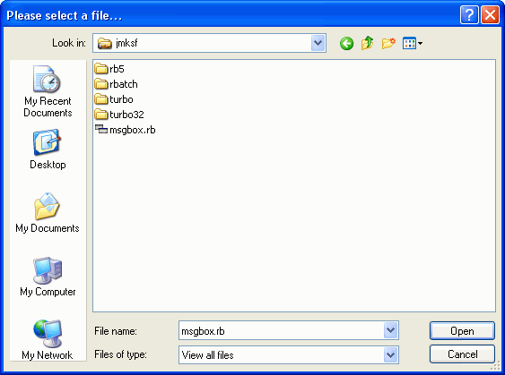

Dialogs for file- and folder-selection
Not rarely, it is especially when writing system maintainance scripts, required to ask the user for pathes, e.g. to filenames or folders. The usage of the INPUTBOX may be one possility to do this, but here, the user has to know the complete path to a file or directory, so that such a solution won't be the kindliest way for the user. But here, RapidBATCH will also support you with three great dialogs: OPENBOX, SAVEBOX and FOLDERBOX!
The dialogs OPENBOX and SAVEBOX make it possible to select or enter a filename and to browse through the computer's file system. Additionally, a file-filter can be defined, displaying only a special group of files, following a pattern that is defined by a so called filter definition. This filter is set by using wildcards, * and ?, as it is known from the DOS prompt's dir-command.
The following example script provides a file open dialog to select any file from the filesystem. The path to this file is displayed in the following ECHO-dialog.
openbox [file] = 'Please select a file...', 'View all files|*.*'
echo 'The path to your file is: ' # [file]
end

The OPENBOX function at run-time, presenting an "Open file"-dialog to the user
Equivalently to all of the yet disussed dialogs, OPENBOX (same behavior at SAVEBOX) returns an empty-string when the filename input-field was left blank, the dialog's close-button was pressed or the cancel-button was clicked. Else, the selected filename is returned and stored to the return variable in front of the parameter list. As parameters, both functions expect a dialog title, which can be a prompting text, and the above mentioned file filter, that needs to be specified as a list of items again in the following order:
Filter description or labeling | Filter
The above script creates a filter *.* (= this whill filter all files having a file extension) and names it "View all files". If we now only want to filter text-files (with the .TXT file extension), the following filter must be used:
Text-files|*.txt
OPEN- and SAVEBOX allow both to switch between different filters, if more than one is given. To specify more than one file-filer, just add another filter, separated by a pipe-character (or the as [std_sep] defined standard separation character for lists) to the previous one. The following line shows how a filter is defined to switch between filters for EXE-files, COM-files and BAT-files.
EXE-Files|*.exe|COM-Files|*.com|Batch-Files|*.bat
It is also possbile to use different filter masks under one general filter name. For this, each filter must be separated by a colon (;). The following filter displays all executable files (.EXE, .COM, .BAT) under the general filter name "Executable files", and additionally provides another filter for viewing all types of files.
Executable files|*.exe;*.com;*.bat|All files|*.*
By default, OPENBOX and SAVEBOX do only allow to select one file. But to allow a multiple selection of files, RapidBATCH provides the pre-declared variables [OpenBox_MultiSel] and [SaveBox_MultiSel]. If the corresponding variable for the desired dialog is set to 0 before the function is executed, more than one file can be selected. The selected files are returned as a list of items with this speciality: To save memory space, the first element of the list contains the path of the folder to the files the user selected, the next, by pipe-characters separated list items, are the single filenames within this folder.
The following script demonstrates how multiple file selection are processed.
rem allow multiple file selection on the OPENBOX-dialog
[OpenBox_MultiSel] = '0'
rem let the user select the files
openbox [file_list] = 'Select multiple files', 'All files|*.*'
if [file_list] ! ''
rem read the path
gettok [path] = [file_list], '|', '1'
rem read the files list
[i] = '1'
repeat
[i] + '1'
rem read next file
gettok [file] = [file_list], '|', [i]
if [file] ! ''
echo 'File No. ' # ([i] - '1') # ': ' # [path] # '\' # [file]
elseif [file] = '' & [i] = '2'
rem if the user selected only one file, the file name is
rem already stored in [path]
echo 'The only chosen file is: ' # [path]
endif
until [file] = ''
endif
Multiple selection of files within a "File open"-dialog
If [OpenBox_MultiSel] or [SaveBox_MultiSel] is set back to '-1' again, the dialog will support single file selection only.
In many applications, the user don't wants to miss the comfort of a default file extension, that is automatically appended to the inserted filename without explicitly specifying it. For this comfort, RapidBATCH provides the pre-declared variables [OpenBox_DefFileExt] and equivalently again to SAVEBOX, [SaveBox_DefFileExt]. By setting this variable to a desired default-file extension (without the dot in front of it!), the respective dialog will append this extension to the returned filename automatically, if it is not given.
rem setting the default-extension for SAVEBOX: txt-file
[SaveBox_DefFileExt] = 'txt'
rem asking for the filename
savebox [file] = 'Save file as...', 'Text files|*.txt'
echo 'Filename (with extension!): ' # [file]
Effortless and professional selection of a folder, using the FOLDERBOX-function.
Next to OPENBOX and SAVEBOX, RapidBATCH also provides the FOLDERBOX-function to let the user select a directory from the file-system. Return value is the absolute path to the selected folder. As parameters, FOLDERBOX expects a prompting text for the dialog, and an optional default path, that is automatically opened by default at dialog start up.
The following script opens a FOLDERBOX-dialog in the Windows system directory.
rem selecting a folder
folderbox [folder] = 'Please select a folder:', [windir]
rem the return value is the absolute path to the selected folder
if [folder] ! ''
echo 'The selected folder is: ' # [folder]
else
echo 'You did not selected any folder.'
endif
Same as in all the other build-in dialogs, FOLDERBOX will also return an empty-string when the user hits the dialog's close- or cancel-button, else the absolute folder path.
Copyright © 2000-2006 by J.M.K S.F. Software Technologies, Jan Max Meyer
All rights reserved.